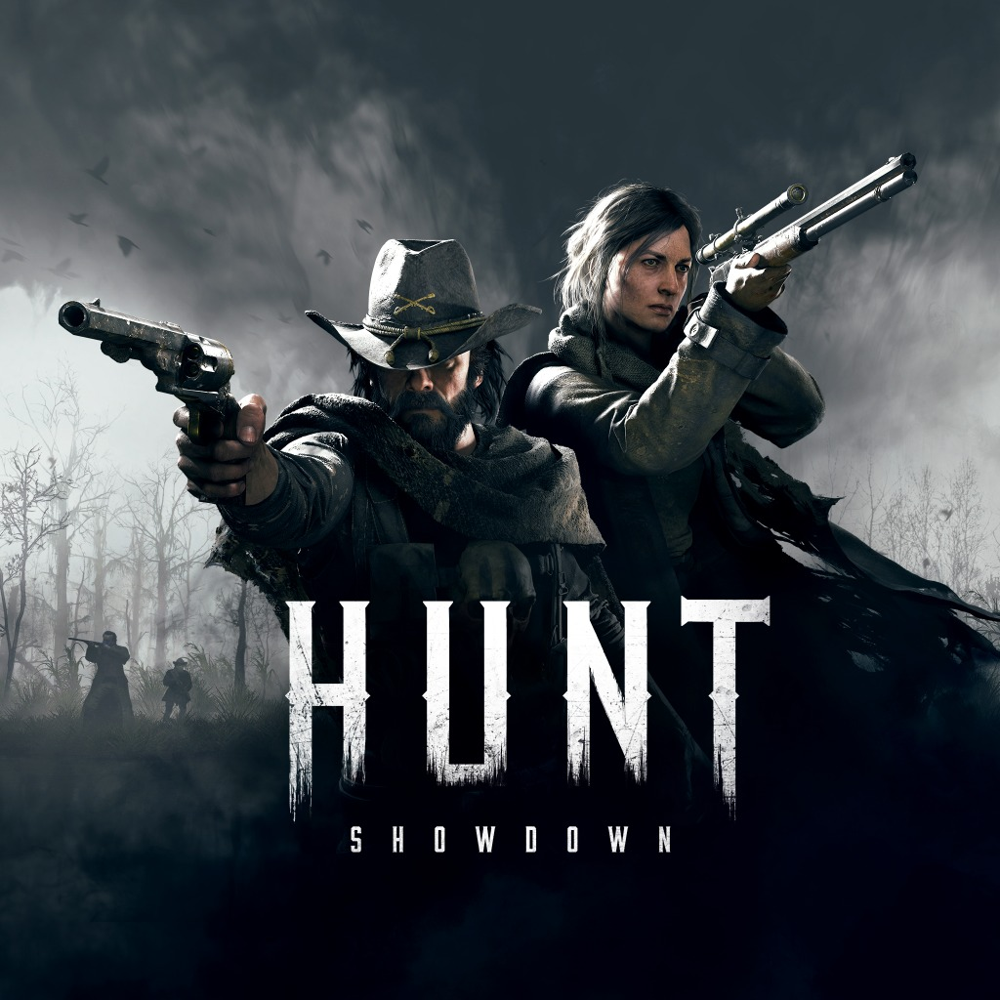

Hunt: Showdown 1896 was initially called Hunt Showdown when it launched into early access on Steam in February 2018. A little over a year later in August 2019 Hunt's early access ended and the game was offically out.

Hunt joined Xbox One in September 2019 and continued to join PlayStaion 4 in February 2020.
Hunt was rebranded as Hunt: Showdown 1896 when Crytek jumped from the older generation, this happened in 2024 and support for the PS4 and Xbox One editions was discontinued.
Hunt was originally under development at Crytek USA under the name, "Hunt: Horrors of the Gilded Age" and was planned the be a "spiritual successor" to Darksiders. After some time, Crytek USA had been shut down due to financial issues and the Crytek headquarters in Germany resumed development and reformed the game under the title, "Hunt: Showdown" to be more akin to what it is today.